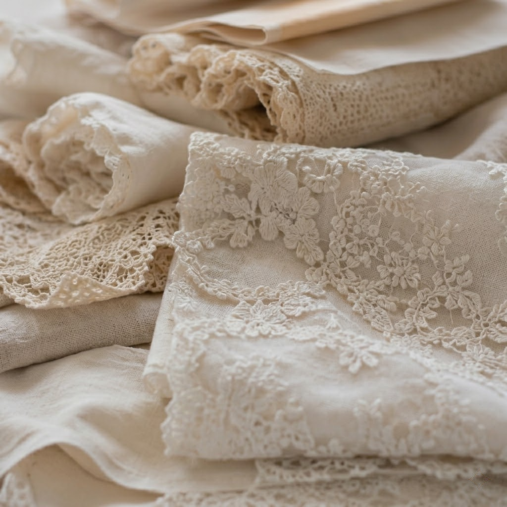
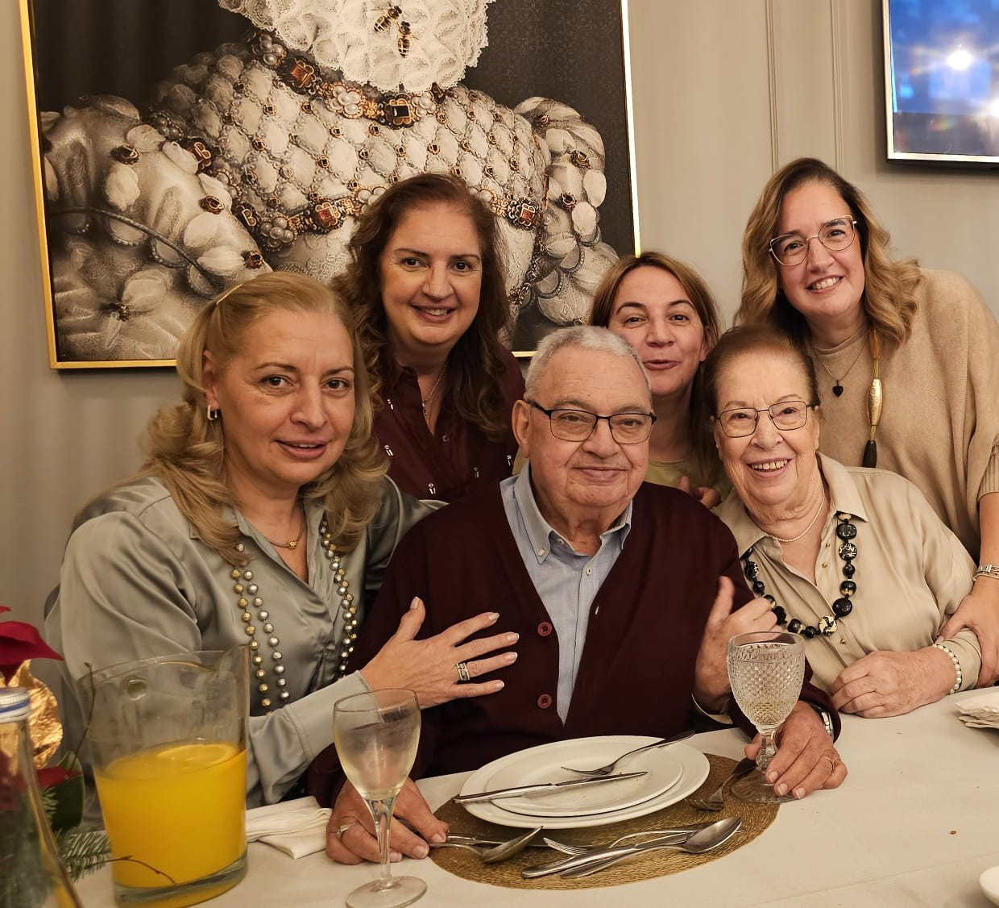
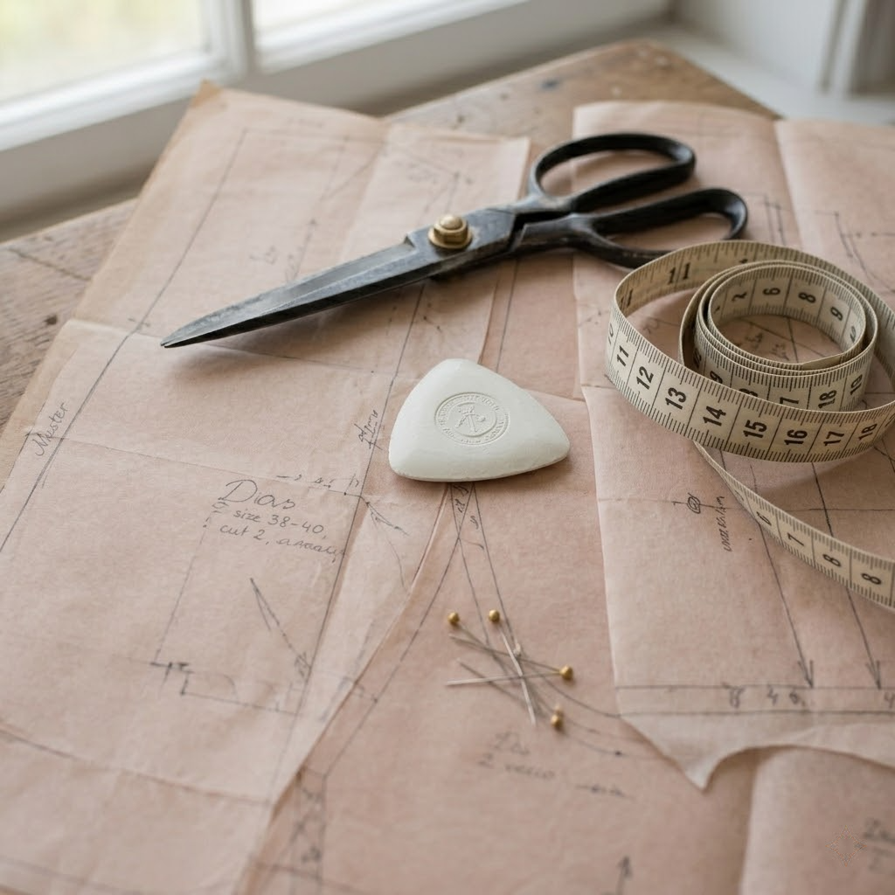
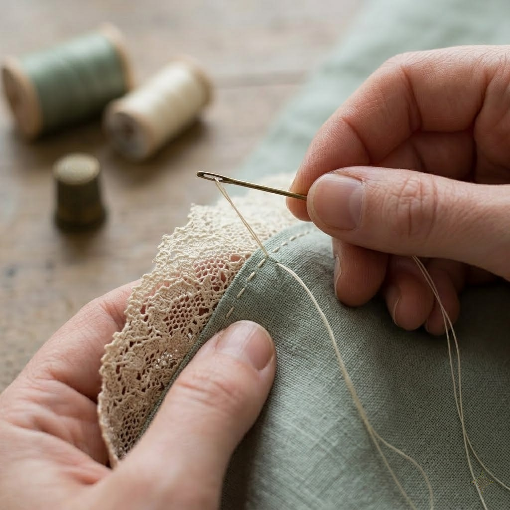
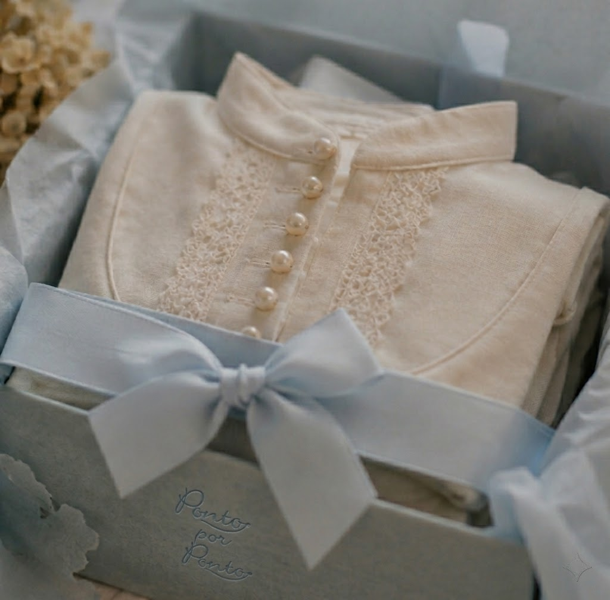

01
Tecidos & rendas
Linhos, sedas, rendas francesas, escolhidos pelo toque, não pelo preço.
Num pequeno atelier no Porto, costuramos vestidos de batizado, vestidos de comunhão e peças de cerimónia da forma como as nossas avós nos ensinaram, à mão, ponto por ponto.
Como família, criámos uma coleção digna de um conto de fadas, com glamour, requinte e elegância na medida certa para marcar, com carinho, os momentos mais importantes dos nossos pequenos.
Lançamos duas coleções por ano, Verão e Inverno, em pequenas séries, disponíveis em lojas selecionadas por toda a Europa.


Linhos, sedas, rendas francesas, escolhidos pelo toque, não pelo preço.

Cortado à medida.

Costurado pela nossa pequena equipa, sem linha de produção.

Botões de pérola, bainhas enroladas à mão, caixas atadas com fita.
Três famílias de peças, meninas, meninos, acessórios.
Para lojistas, imprensa, encomendas personalizadas ou simplesmente para dizer bom dia, lemos todas as mensagens.